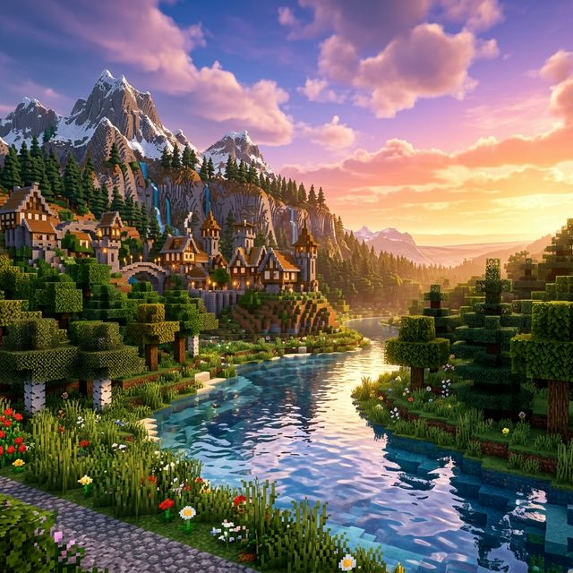

Fabric, not mod soup
Latest-line Fabric with optimization and QoL chosen on purpose. Goal is headroom for TPS, not a modpack arms race.

Whitelist-only den: vanilla-first loops, a curated mod set, and ops who actually restart the thing when it sulks. Run by Ryan; tooling co-piloted with Composer 2.
Keep going
About
No lobby circus—just survival, noise kept down, and Fabric where it earns its keep. The helper dashboard (start/stop, logs, whitelist) lives beside the jar so we are not SSH-guessing at 2 a.m.
Stack
Fabric for performance mods and sane server hooks—plus a whitelist so randoms do not stress-test your base while you are AFK fishing.
Latest-line Fabric with optimization and QoL chosen on purpose. Goal is headroom for TPS, not a modpack arms race.
Known players, fewer surprises. When something goes sideways, we lean on backups and clear rules—not vibes.
Local dashboard for console, mods, whitelist, and the boring ops stuff—so the game stays the game.
Mod list
Names and versions ship from mods.json in this repo—edit that file and redeploy Pages to update the public list.
Loading mod list…
Connect
Java Edition only. If you are not on the whitelist yet, poke ops on Discord—this box is just the address.
Java Edition · Whitelist
Ctrl+C works when the IP field is focused